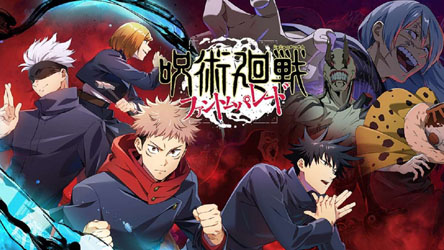

Desde su estreno como anime en 2020, Jujutsu Kaisen ha capturado la atención de millones de fanáticos alrededor del mundo. Su popularidad ha traspasado las pantallas y las páginas del manga, llegando también al mundo de los videojuegos. A continuación, te presentamos una cronología detallada de los juegos oficiales y colaboraciones más destacadas.
Descripción:
Phantom Parade es el primer juego móvil oficial de la franquicia. Ofrece una experiencia tipo gacha con
combates por turnos, gráficos espectaculares y una historia paralela al anime, que expande el universo con nuevos
personajes y misiones. Desde abril de 2024 también está disponible para PC, lo que amplió su alcance global.
Descripción:
Este título ofrece combates intensos en equipos de dos personajes, permitiendo a los jugadores recrear y revivir
batallas icónicas del anime. Con gráficos estilo cel-shading y un amplio catálogo de personajes, Cursed Clash
se ha convertido en uno de los juegos de lucha más esperados del año.
La expansión de Jujutsu Kaisen al mundo de los videojuegos ha sido progresiva pero firme. Con títulos principales que aportan narrativa y acción, y colaboraciones que fortalecen su presencia global, esta franquicia sigue creciendo como fenómeno multimedia. Tanto si eres fanático del anime como de los videojuegos, estas experiencias digitales te permiten vivir la emoción del mundo jujutsu de una forma completamente nueva.
|  |
|